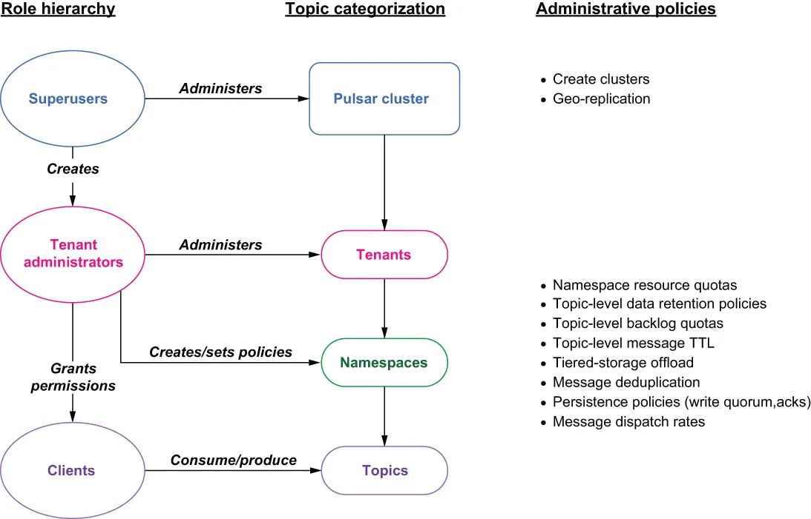

In Pulsar, roles are used to define a collection of privileges, such as permission to access a particular set of topics that are assigned to groups of users. Apache Pulsar uses the configured authentication providers to establish the identity of a client and then assign a role token to that client. These role tokens are then used by the authorization mechanism to determine what actions the clients are allowed to make.
在 Pulsar 中，角色被用来定义一组权限的集合，例如访问某组特定主题的权限，而这些权限会被分配给不同的用户组。Apache Pulsar 使用所配置的认证提供者来确定客户端的身份，然后为该客户端分配一个角色令牌（role token）。随后，授权机制就会依据这些角色令牌来判断各个客户端被允许执行哪些操作。

Figure 6.3 The Pulsar role hierarchy and its corresponding administrative tasks
图 6.3 Pulsar 的角色层级及其对应的管理任务
Role tokens are analogous to physical keys that are used to open a lock. Many people may have a copy of the key, and the lock doesn’t care who you are, only that you have the right key. Within Pulsar, the hierarchy of roles falls into three categories, each with their own capabilities and intended uses. As you can see from figure 6.3, the role hierarchy closely mirrors Pulsar’s cluster/tenant/namespace hierarchy when it comes to structuring data. Let us examine each of these roles in greater detail.
角色令牌可以类比于用来开锁的实体钥匙。很多人可能都持有同一把钥匙的副本，而锁并不关心你是谁，它只关心你拿的钥匙对不对。在 Pulsar 内部，角色的层级划分为三类，每一类都有自己的能力和预期用途。从图 6.3 中可以看到，在组织数据的结构上，角色层级与 Pulsar 的集群/租户/命名空间层级高度对应。下面我们来逐一仔细考察这些角色。
Superusers
超级用户
Just as the name implies, superusers can perform any action at any level of the Pulsar cluster; however, it is considered a best practice to delegate the administration of a tenant and its underlying namespaces to another person who will be responsible for the administration of that particular tenant’s policies. Therefore, superusers’ primary activity is the creation of tenant admins, which can be accomplished from the pulsar-admin CLI by executing a command similar to the one shown in the following listing.
正如其名，超级用户可以在 Pulsar 集群的任何层级上执行任何操作；不过，业界公认的最佳实践是：把某个租户及其下属命名空间的管理工作委派给另一个人，由此人负责该租户各项策略的管理。因此，超级用户的主要工作就是创建租户管理员，这可以通过在 pulsar-admin CLI 中执行一条类似于下面清单所示的命令来完成。
Listing 6.21 Creating a Pulsar tenant
$PULSAR_HOME/bin/pulsar-admin tenants create tenant-name \ ❶
--admin-roles tenant-admin-role \ ❷
--allowed-clusters standalone ❸
❶ Specifies the tenant’s name
❶ 指定租户的名称。
❷ Specifies the tenant admin role name for the tenant
❷ 指定该租户的租户管理员角色名称。
❸ Specifies the clusters where the tenant will exist
❸ 指定该租户将存在于哪些集群中。
This allows the superuser to focus on cluster-wide administrative tasks, such as cluster creation, broker management, and configuring tenant-level resource quotas to ensure all the tenants receive their fair share of the cluster’s resources. Typically, the administration of a tenant is given to a user that is responsible for designing the layout of the topics required for the tenant, such as a department head, project manager, or application team leader.
这样一来，超级用户就能专注于集群层面的管理任务，例如集群创建、broker 管理，以及配置租户级别的资源配额，以确保所有租户都能公平地分到集群资源。通常，某个租户的管理权会交给这样一位用户：他负责设计该租户所需主题的布局，比如部门主管、项目经理或应用团队负责人。
Tenant administrators
租户管理员
The primary focus of the tenant administrator is the design and implementation of namespaces within their tenant. As I discussed earlier, namespaces are nothing more than a logical collection of topics that have the same policy requirements. Namespace-level policies apply to each topic within a given namespace and allow you to configure things such as data retention policies, backlog quotas, and tiered-storage offload.
租户管理员的首要关注点，是在自己租户内设计和落地命名空间。正如我前面所讨论的，命名空间无非就是一组具有相同策略要求的主题的逻辑集合。命名空间级别的策略会作用于给定命名空间内的每一个主题，让你能够配置诸如数据保留策略、积压配额以及分层存储卸载之类的东西。
Clients
客户端
Last are the client roles, which can be any application or service that has been granted permission to consume from or produce to topics with the Pulsar cluster. These permissions are granted by the tenant admins at either the namespace level, meaning they apply to all the topics in a particular namespace, or on a per-topic basis. Listing 6.22 shows an example of both scenarios.
最后是客户端角色，它可以是任何被授予权限、能够向 Pulsar 集群中的主题生产消息或从中消费消息的应用程序或服务。这些权限由租户管理员授予，既可以在命名空间级别授予（意味着它们适用于某个特定命名空间内的所有主题），也可以逐主题授予。清单 6.22 展示了这两种场景的示例。